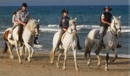
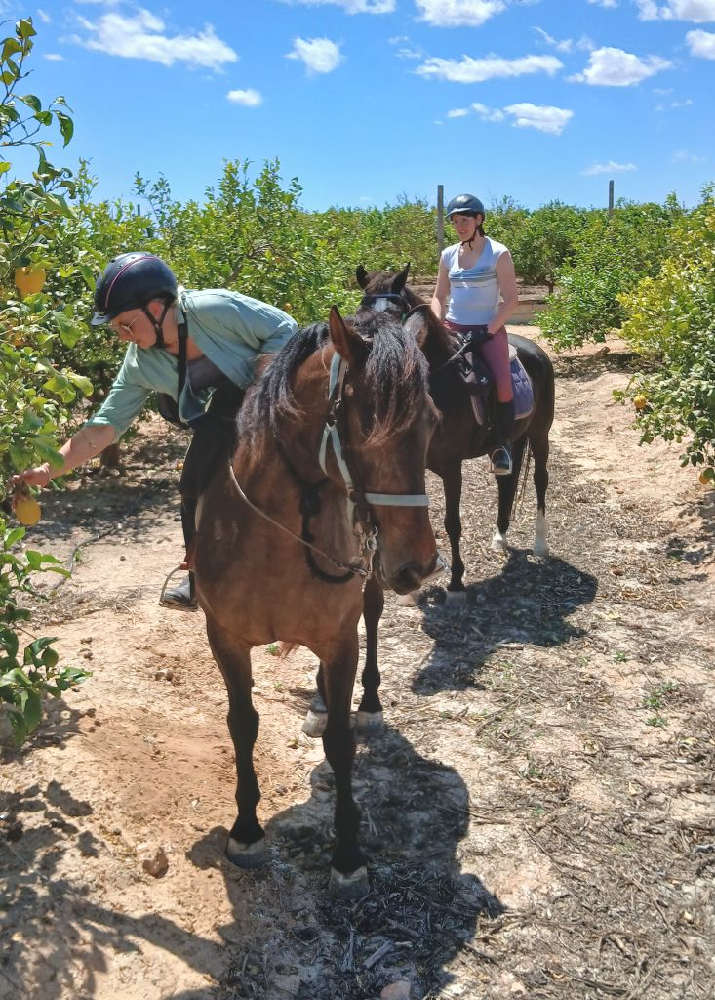
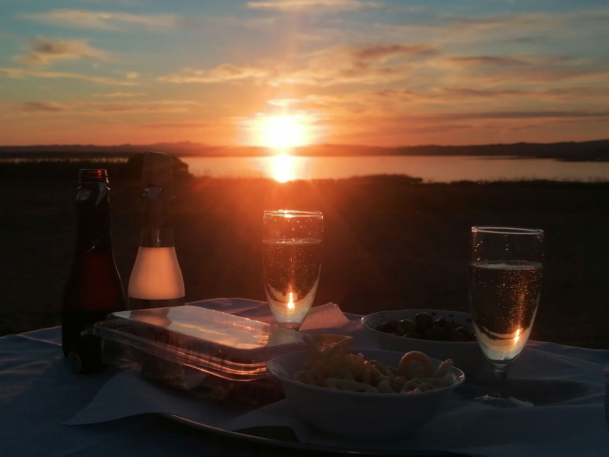
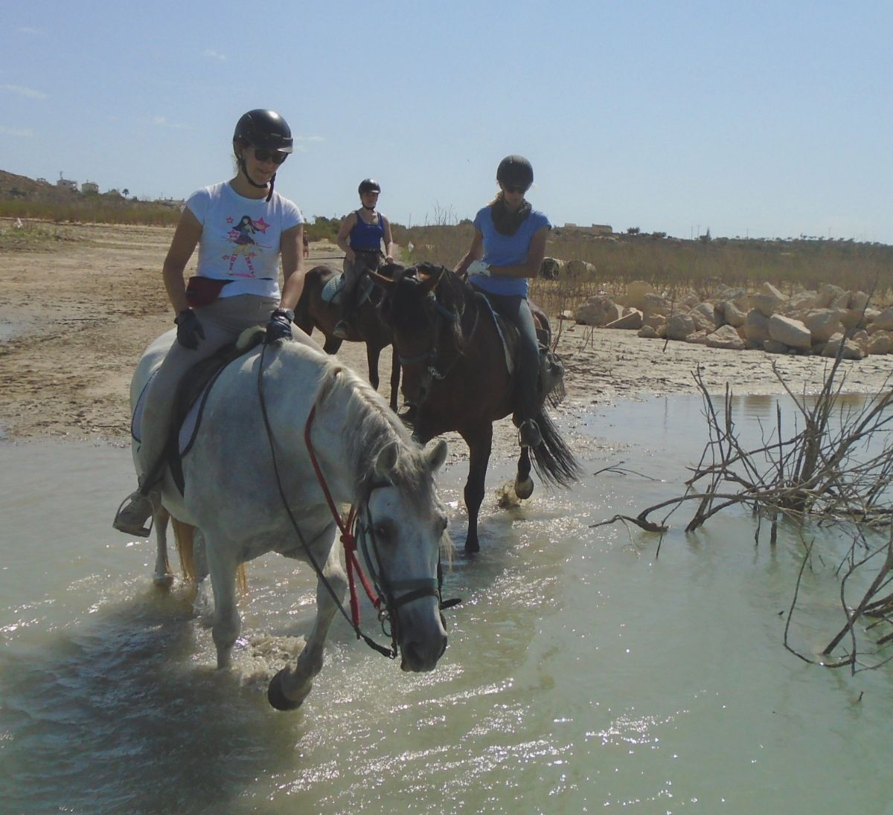
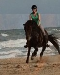
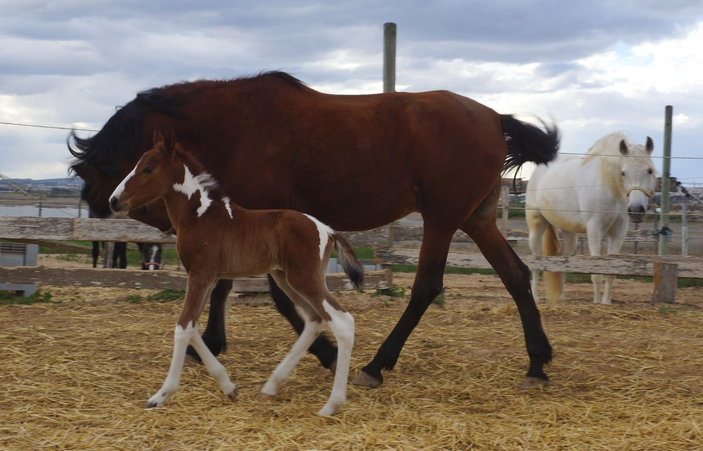
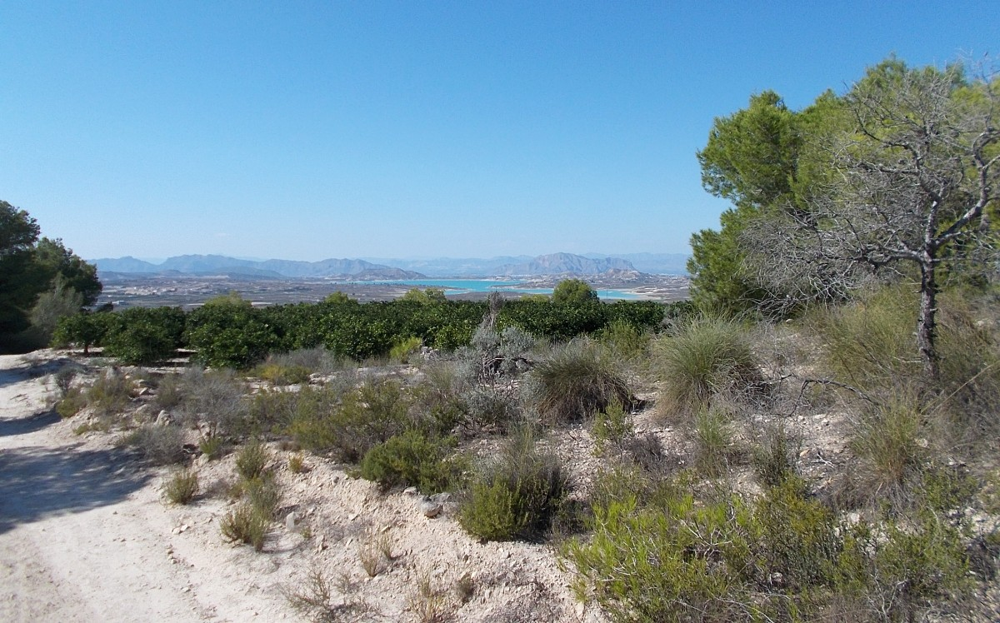
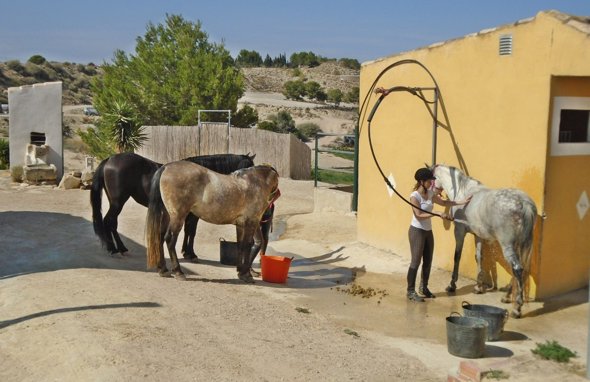
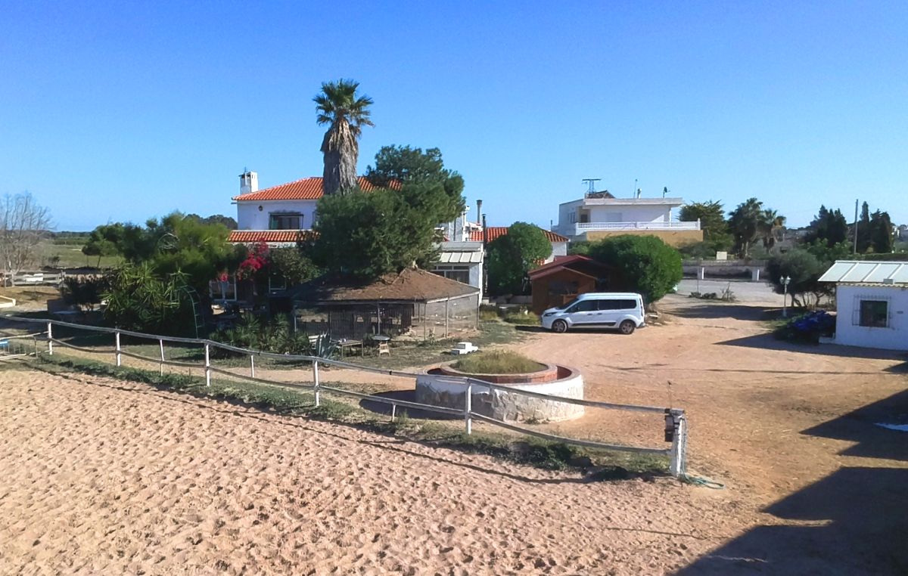
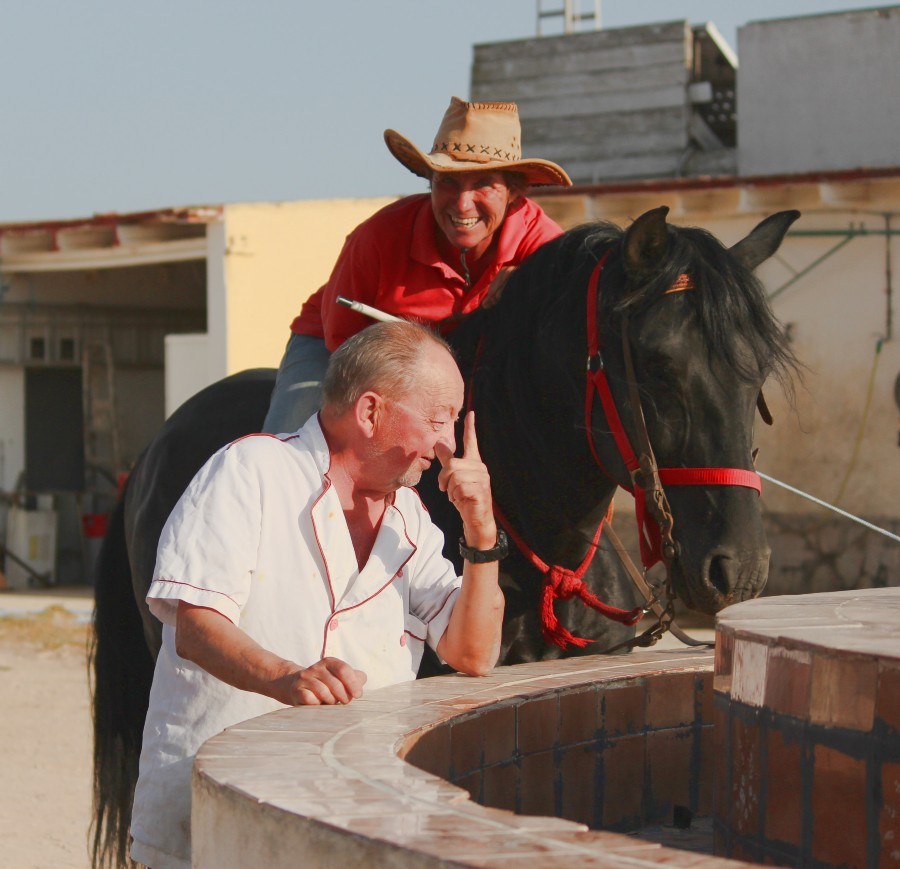

Strand · Küste
Ritt zum Strand
Über Dünen bis ans Wasser: der unberührte Strand im Schritt, Trab und Galopp — je nach deinem Können.
Geführte Ausritte und mehrtägige Reiturlaube auf einem familiären, deutsch geführten Hof mit iberischen Pferden und PRE. Seit 1986.
Geführte Ausritte
Für jedes Niveau, von den ersten Schritten bis zum echten Geländeritt. Du wählst die Route, wir kümmern uns um Pferd und Weg.

Über Dünen bis ans Wasser: der unberührte Strand im Schritt, Trab und Galopp — je nach deinem Können.

Ein ruhiger Weg durch Obsthaine und Feldwege im Hinterland. Der ideale Ritt, um anzufangen.

Wir reiten am späten Nachmittag los und sehen die Sonne über der Lagune von La Mata untergehen. Mit Pause.

Echtes Geländereiten in kleiner Gruppe, für Reiter mit Erfahrung. Über Lagune, Feld und Küste.
Pakete
Kurze Reiturlaube mit Unterkunft auf dem Hof. Preis je nach Datum und Gruppe — frag uns einfach.
Der kurze Ausbruch
Für alle, die wirklich reiten wollen
Zu zweit oder mit Familie
Reservierungsanfrage
Keine Vorauszahlung. Datum und Details bestätigen wir gemeinsam per E-Mail oder Telefon.
Galerie





Der Hof
Ein familiärer Reiterhof mit eigener Unterkunft direkt über den Ställen. Am Morgen wachst du zwischen den Pferden auf; nachmittags bist du in Minuten am Strand oder an der Lagune von La Mata.

Über uns
Gabi & Peter · El Refugio, seit 1986
Seit 1986 kümmern wir uns hier um rund 50 Pferde — iberische und PRE, viele bei uns geboren. Kein Massenbetrieb: kleine Gruppen, Zeit für jedes Pferd und für jeden Gast.
Wir sind Deutsche in Spanien und betreuen dich auf Deutsch, Englisch und Spanisch — von der ersten Anfrage bis zum letzten Ausritt.
— Gabi & Peter
Kontakt